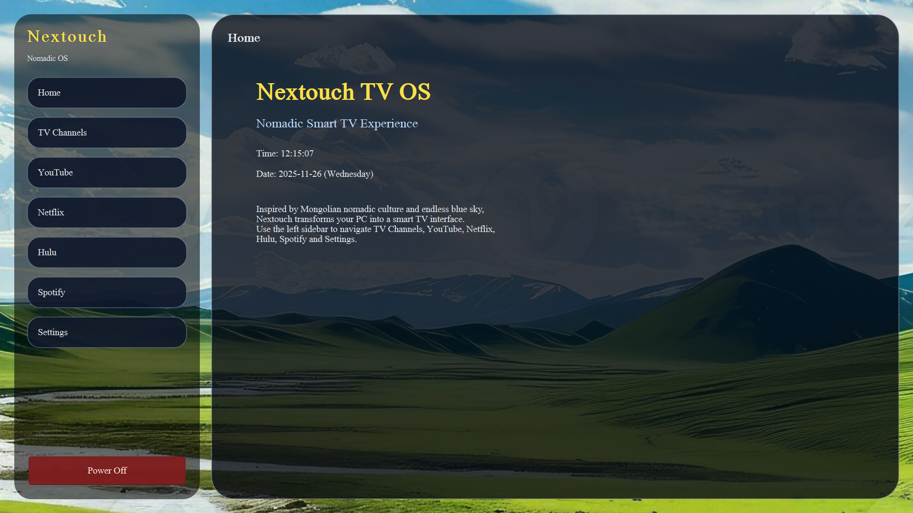
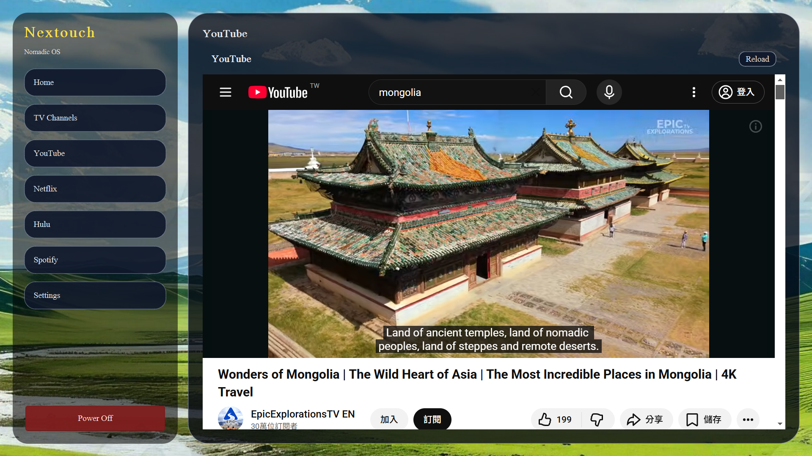

🏠 Home Screen
Clean, elegant, Mongolian-inspired interface. All your entertainment in one place.
🎶 Touchless Spotify
Control Spotify using only your hand with real album art and real-time info.

▶️ YouTube Mode
Watch YouTube in a TV-style viewer integrated smoothly into Nextouch OS.
